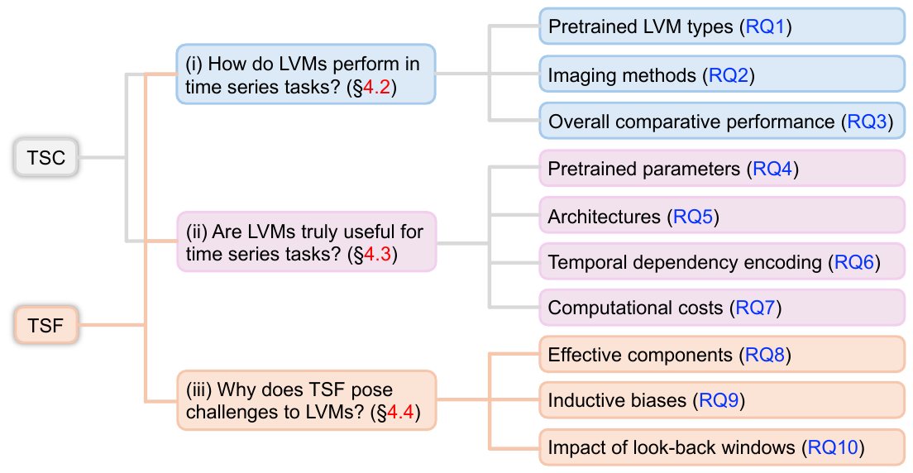
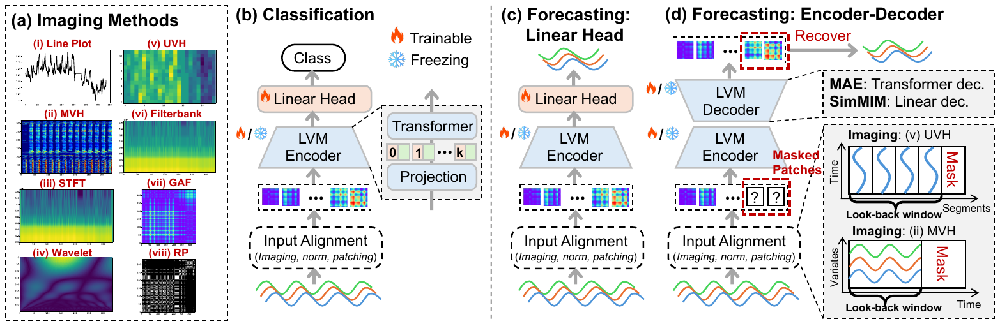
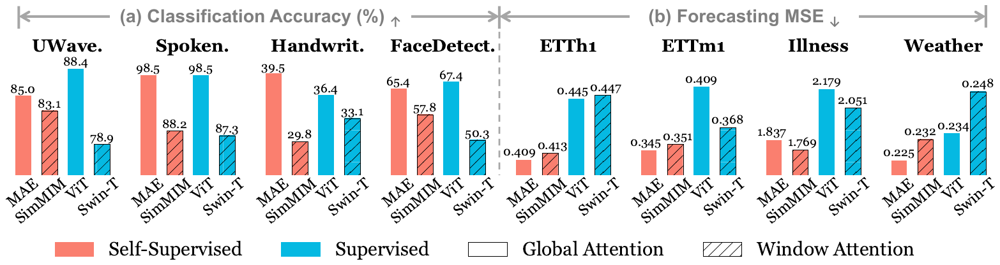
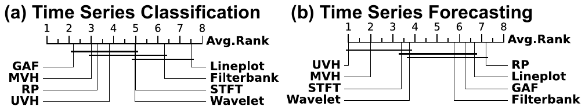
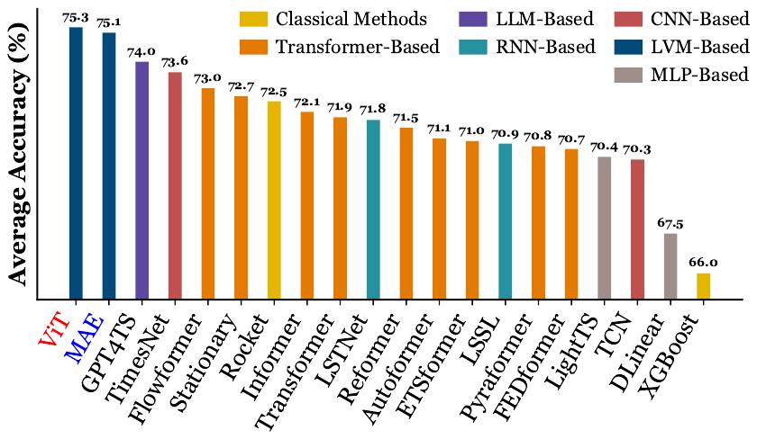
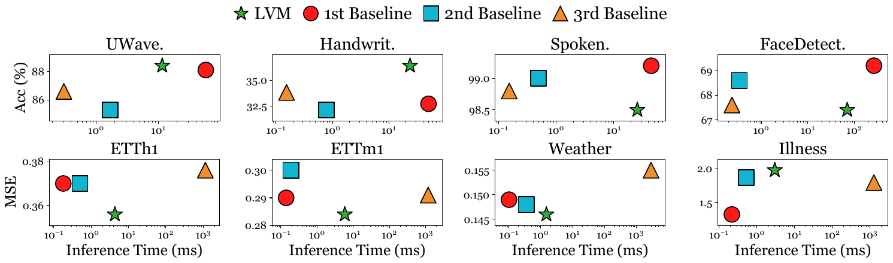
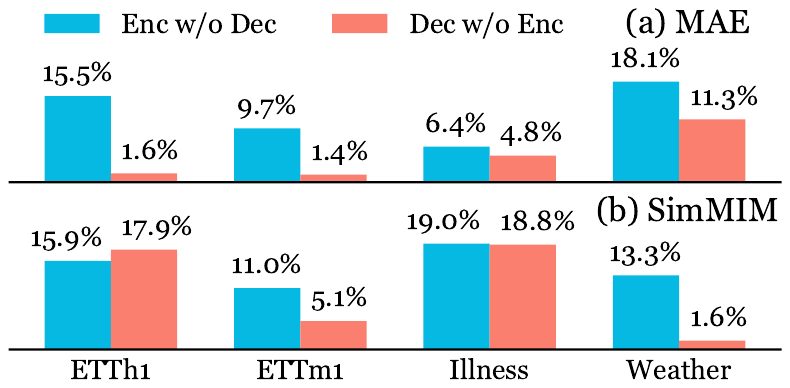
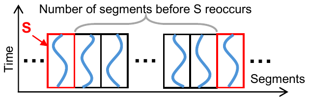
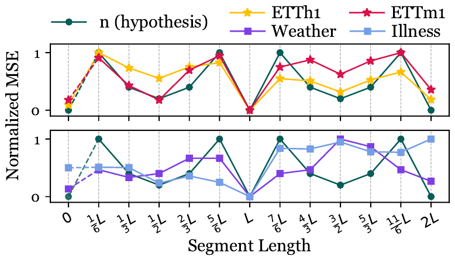
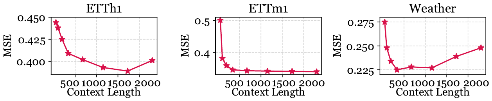

Are Image-Pretrained Vision Models
Useful for Time Series Analysis?
ChengAo Shen1, Hanghang Tong2, Dongjin Song3, Zhigang Deng1, Qingsong Wen4, Jingchao Ni1
1University of Houston 2University of Illinois at Urbana-Champaign 3University of Connecticut 4Squirrel Ai Learning
Large Vision Models (LVMs) are emerging tools for transferring cross-modal knowledge to time series, but their potential for this domain is not yet fully understood. This work addresses the gap by investigating LVMs for both high-level (classification) and low-level (forecasting) time series tasks. Our aim is not only to assess whether LVMs can succeed, but also to reveal why they succeed or fall short.
In these approaches, time series are imaged, i.e., transformed into certain image representations, and then fed into an LVM to learn embeddings that can be probed for downstream tasks. In this work, “LVM” is used to refer to image-pretrained vision models with standalone vision backbones. Vision-language and multimodal foundation models are beyond the scope of this work.
Through a comparative benchmark covering four representative LVMs, eight imaging methods, 18 datasets, and 21 baselines, we identify the strengths and limitations of the foundational LVMs, as well as effective strategies for adapting them to time series modeling. In a nutshell, our conclusion is that pretrained LVMs prove versatile for time series classification (TSC) – a task that relies on pattern comparison – but remain constrained for time series forecasting (TSF), which requires precise numerical inference. Current best-performing LVM-based forecasters, although effective, remain confined to specific types of LVMs and imaging methods, exhibit biases toward forecasting periodic components in time series, and struggle with long look-back windows.
Unlike prior works that question the adoption of Transformers and LLMs in this field, we take a cautiously optimistic view, aiming to provide novel insights and practical caveats for selecting and adapting LVMs to appropriate time series tasks in order to support future developments. The experiments are organised as ten research questions (RQs) in three groups, as shown below.

This work does not aim to introduce new models. Instead, we assess LVMs’ innate ability for time series analysis by keeping the main architecture intact while making a few necessary modifications for cross-modal adaptation: (i) input alignment and (ii) task-specific augmentation. The study involves two supervisedly pretrained LVMs, ViT and Swin, and two self-supervisedly pretrained LVMs, MAE and SimMIM, along with eight widely used methods for imaging time series.
Input alignment Line Plot draws a 2D image with the x-axis representing time steps and the y-axis representing time-wise values. UVH (Univariate Heatmap) divides a univariate series into segments of length L – where L is a period obtained using the Fast Fourier Transform – and stacks them into a 2D image. MVH (Multivariate Heatmap) visualizes the matrix of a multivariate series, with the x-axis representing time steps and the y-axis representing variates. STFT, Wavelet and Filterbank transform the series into a spectrogram; GAF and RP produce square matrices with both axes representing time. The imaged series is resized to the LVM’s pretraining input size via bilinear interpolation, duplicated three times to form a grayscale image, and standardized in the same manner as the LVMs standardize each pretraining image.
Task-specific augmentation For the TSC task, we probe each LVM’s encoder: the classification layers of ViT and Swin, and the reconstruction decoders of MAE and SimMIM, are replaced with a linear classification layer. For the TSF task, we employ two frameworks from the literature. One trains a linear forecaster on the concatenated CLS and patch embeddings and applies to ViT and Swin; the other uses LVM reconstruction decoders for forecasting and applies to MAE and SimMIM – it applies a mask after the look-back window portion of the image, then reconstructs the masked patches and recovers forecasts from them. This requires input images to preserve time series values at the pixel level, and among the eight imaging methods only MVH and UVH do.
Ablation models To assess whether the LVM architecture is overly complex, we introduce two ablation models. Both retain the projection layer in the LVM encoder but replace the Transformer with simpler layers: the first replaces it with a linear layer, referred to as w/o-LVM; the second uses a single randomly initialized multi-head attention layer, referred to as LVM2Attn.

What type of LVM best fits the TSC (TSF) task? We observe that (1) supervised (semantic-level) LVMs and self-supervised (numerical-level) LVMs achieve comparable classification accuracies, while (2) self-supervised LVMs substantially outperform supervised LVMs in forecasting. Observation (2) can be attributed to the continuous nature of both pixels and time series, which enables self-supervised LVMs to transfer their capability of reconstructing masked pixels to predicting masked time series. SimMIM and Swin underperform, likely because they employ a window-based local attention mechanism that implicitly assumes translation invariance – an assumption that does not hold for imaged time series, where different locations correspond to different time steps or frequencies.

Which imaging method best fits the TSC (TSF) task? GAF performs best for classification, followed by MVH and RP, indicating their ability to encode distinguishable temporal patterns. In contrast, Line Plot substantially underperforms and therefore may be less suitable for this task. For forecasting, when combined with the reconstruction framework, UVH achieves the best performance, followed by MVH. This suggests their suitability for numerical-level tasks by leveraging the knowledge acquired by LVMs during masked-pixel reconstruction in large-scale image-based pretraining.

Can LVMs achieve SOTA performance? Here ViT and MAE are selected as the best-performing supervised and self-supervised LVMs, each configured with its best-performing imaging method – GAF for TSC and UVH for TSF. In classification, both ViT and MAE outperform the baselines, suggesting both supervised and self-supervised LVMs are effective for the high-level (semantic/pattern level) TSC task. In forecasting, across the eight datasets and two metrics, MAE outperforms non-LVM baselines in 9/16 cases, while ViT does not show clear superiority over non-LVM baselines, which may be due to its classification-based pretraining. The results suggest distinct behaviors of LVMs in TSF, indicating that greater challenges may arise in low-level (numerical level) tasks.
Model comparison on the TSF task, averaged over forecasting horizons; lower MSE and MAE are better. # Wins is the number of times each method performs best.

This section aims to uncover whether the effectiveness of LVMs truly stems from their pretrained parameters, architectures, and temporal modeling capabilities, and assesses their computational costs. Unless otherwise noted, the best-performing LVM is used for each task: ViT with GAF imaging for TSC and MAE with UVH imaging for TSF.
Are the pretrained parameters in LVMs useful? For TSC, the “freezing all parameters” setting outperforms “training from scratch” in all cases, suggesting that LVMs indeed transfer useful knowledge, and fine-tuning only the MLP and normalization layers is the minimal effort required to achieve performance comparable to full fine-tuning. For TSF, surprisingly, neither the “freezing all parameters” setting nor the “fine-tuning all parameters” setting consistently outperforms “training from scratch”. In contrast, fine-tuning only the normalization layers is generally better than other training and fine-tuning strategies. This may be attributed to the low-level nature of forecasting: since the model must predict numerical values directly, performance is strongly influenced by normalization, whereas fine-tuning more parameters than necessary may lead to overfitting.
How useful are LVM architectures? Training LVMs from scratch does not consistently outperform the two simpler models, suggesting that the architecture of LVMs alone may be overly complex for the available training data; however, since training from scratch is generally no worse than the simpler models, the overfitting issue does not appear to be severe. Moreover, the “freezing all parameters” setting and all fine-tuning settings outperform the simpler models in TSC, while fine-tuning the normalization layers consistently outperforms them in TSF. These results indicate that LVM architectures are not overly complex when serving as containers of transferable knowledge acquired through pretraining.
TSC reports accuracy (%, higher is better); TSF reports MSE (lower is better). The upper panel compares fine-tuning strategies, the lower panel the two simpler ablation models.
Can LVMs capture temporal dependencies? We perturb the temporal order in four ways: Sf-All randomly shuffles all time points; Sf-Half randomly shuffles the first half; Ex-Half swaps the first and second halves; and Masking randomly masks 50% of the time points. LVMs consistently exhibit performance drops under temporal perturbations, and they are more vulnerable to these perturbations than the ablation models. This suggests that LVMs likely make effective use of temporal patterns in time series during inference.
Relative performance drops of the compared models under different temporal perturbations; the accent marks the largest drop under each perturbation strategy.
What are the computational costs of LVMs? LVMs have a larger number of parameters than the baselines. On average, LVMs require 3x (16x) the training time of the best TSC (TSF) baseline, primarily due to the larger number of trainable parameters. For inference, LVMs are 4x faster than the best TSC baseline but 20x slower than the best TSF baseline, due to both the increased model size and the additional cost of transforming time series into images. Compared with the best baselines, LVMs trade a relatively high computational overhead during inference for improved performance on many datasets.


Which component of LVMs contributes more to TSF? Usually, pretrained encoders are regarded as general feature extractors, whereas decoders are often task-specific and re-trained for downstream tasks. However, the intuition appears to be reversed when adapting LVMs to TSF. We compare two ablations: Enc w/o Dec, which fine-tunes the pretrained encoder while re-training a randomly initialized decoder, and Dec w/o Enc, which fine-tunes the pretrained decoder while re-training a randomly initialized encoder. Enc w/o Dec exhibits a larger performance drop, suggesting that pretrained decoders contribute more to TSF performance than pretrained encoders. This can be attributed to the fact that LVM decoders are pretrained to reconstruct pixel values, making them naturally suited to the numerical-level TSF task.
Notably, the decoder of SimMIM is merely a linear layer accounting for only 3.8% of the model parameters, yet its contribution surpasses that of the substantially larger encoder. This observation also helps explain the difficulty of adapting supervised LVMs to TSF, as they typically lack pretrained decoders for numerical inference.

Does the period-based UVH imaging method introduce any bias? UVH stacks length-L segments of a univariate series into a 2D image, where L denotes the period. We find that this method induces an inductive bias toward “forecasting periods”. Evaluating MAE’s forecasting performance while varying the segment length from L/6 to 2L, MAE achieves its best performance at L and 2L, suggesting that (1) the datasets exhibit strong periodicity, and (2) MAE tends to forecast future values by “combining” past periodic segments. When the segment length does not align with the underlying periods, MAE’s forecasting accuracy deteriorates substantially.
Under the UVH imaging framework, the forecasting difficulty is highly correlated with how frequently a segment reoccurs, which can be quantified by the number of intervening segments between two consecutive occurrences. If x has an exact period L and is divided into segments of length (i/k)L, the smallest number of segments before a segment reoccurs is n = k / GCD(i, k), where GCD denotes the greatest common divisor. The resulting “M”-shaped curve of n aligns strongly with the MSEs on ETTh1 and ETTm1, supporting the estimation of TSF difficulty and suggesting that MAE with UVH imaging has an inductive bias toward periodicity; the MSEs on Weather and Illness align less well, likely due to their weaker periodicity. On datasets of weak periodicity, MAE does not show a consistent advantage over the non-LVM baseline, which further confirms the analysis and calls for diversifying benchmark datasets for the TSF task.

Can LVMs make effective use of look-back windows? Intuitively, longer look-back windows can facilitate forecasting. MAE’s performance improves as the look-back window increases up to certain steps (e.g., 500–1500), after which it plateaus or declines. This behavior may stem from (1) the informativeness of a long look-back window, and (2) the image transformation process: since pretrained LVMs operate on fixed-size images with a limited number of pixels, they may be unable to capture all relevant information from excessively long time series, and image pixels are not fully utilized by the UVH imaging method to encode time-step information. Fortunately, contemporary LVMs can effectively handle moderately long look-back windows, and a length of about a thousand time steps is sufficient for many applications.

Through extensive experiments across four representative types of LVMs, eight imaging methods, 18 datasets, and 21 baselines, we provide insights into whether image-pretrained LVMs are effective for time series tasks, how to configure them for optimal performance, and what challenges remain in LVM-based TSF. These insights can facilitate the adoption of LVMs for time series analysis across research and applications.
Our benchmark study highlights several promising directions for future research: (1) integrating different imaging methods to combine their distinct encoding capabilities; (2) reducing inference latency in LVM-based TSF; (3) enhancing encoder utilization in LVM-based TSF; (4) pretraining more effective decoders for LVM-based forecasters; (5) addressing or harnessing the inductive bias of LVM-based forecasters; (6) improving pixel utilization for encoding time series information in TSF; (7) developing encoders to learn multivariate dependencies; (8) incorporating exogenous variates in TSF; and (9) disentangling the impact of permuting variates when using the MVH imaging method. Moreover, a considerable portion of current TSF benchmark datasets exhibit strong periodicity, which may lead to biased conclusions about models with inductive biases similar to those of the UVH-imaging-based LVM forecasters; diversifying benchmark datasets is therefore also an important future research direction.
Time series foundation models such as Chronos, Moirai, and LightGTS encode intra-modal knowledge, i.e., knowledge acquired from large-scale time series pretraining, which is complementary to the cross-modal (visual) knowledge encoded by LVMs. For example, a promising future direction is to fine-tune image-pretrained LVMs on large-scale time series corpora, thereby integrating both cross-modal and intra-modal knowledge to further enhance performance. We hope this study complements existing research and lays the groundwork for future work on multimodal, agentic time series analysis.
Additional backbones (DINOv2, MLCD, LaVin-DiT and the vision component of Qwen2-VL), LoRA adaptation, variate permutations and a comparison with time series foundation models are in the paper’s appendices.
@article{shen2026from,
title = {From Images to Signals: Are Image-Pretrained Vision Models Useful for Time Series Analysis?},
author = {ChengAo Shen and Hanghang Tong and Dongjin Song and Zhigang Deng and Qingsong Wen and Jingchao Ni},
journal = {Transactions on Machine Learning Research},
issn = {2835-8856},
year = {2026},
url = {https://openreview.net/forum?id=aWVG2rN4OV},
note = {Featured Certification}
}